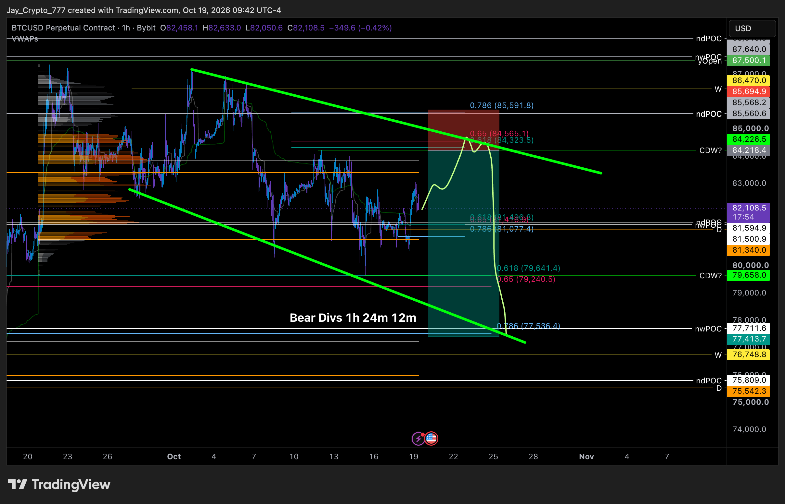
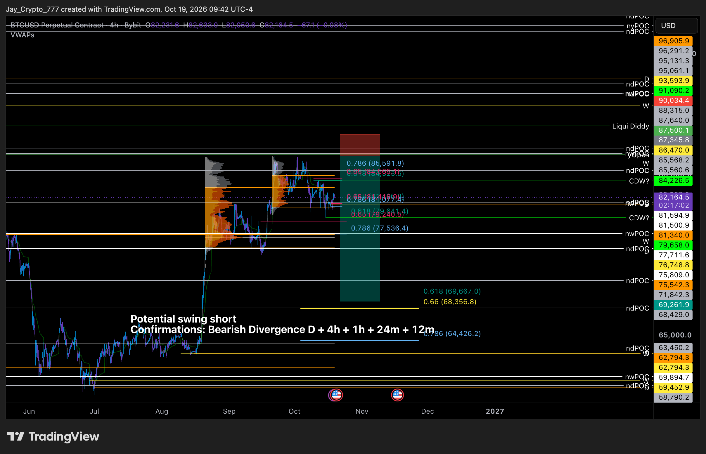
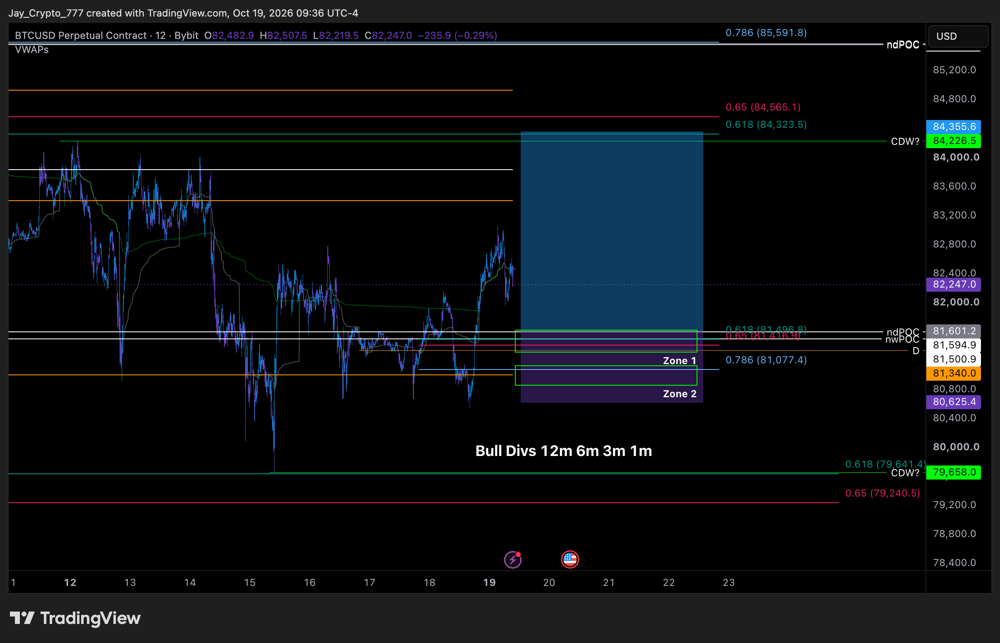
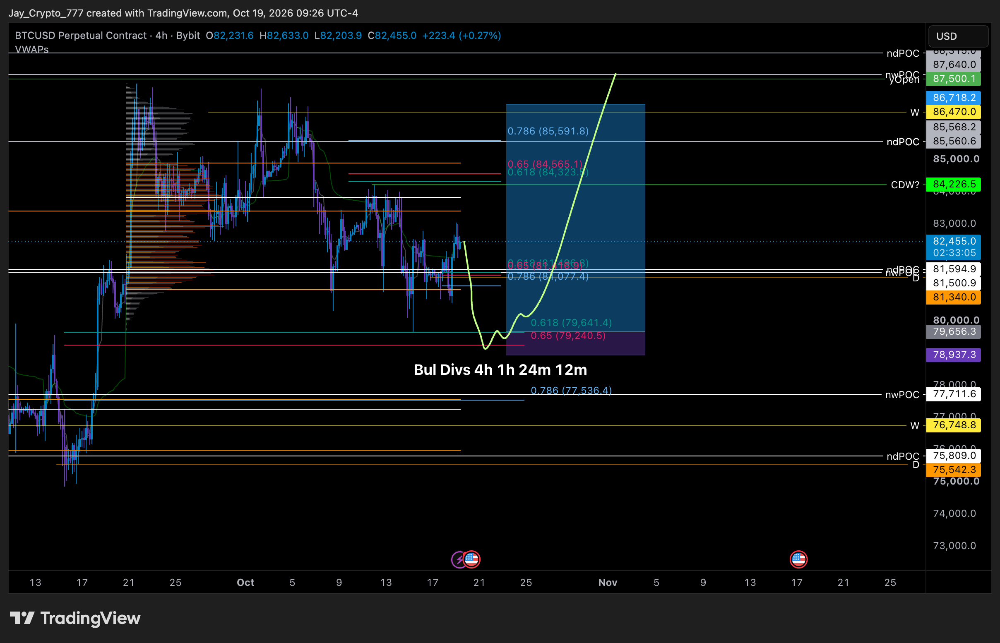
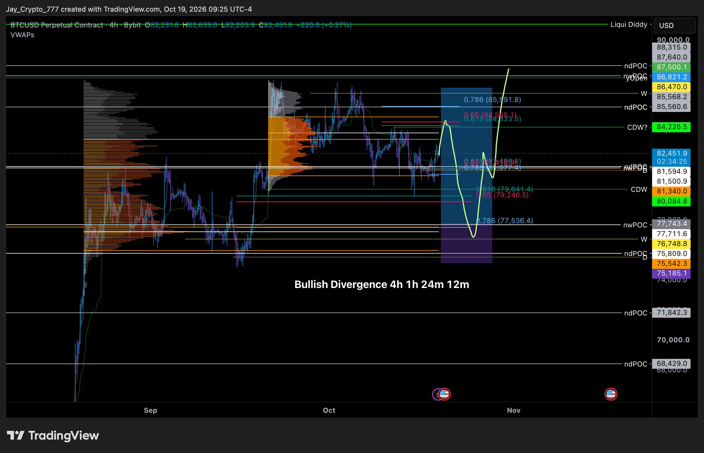
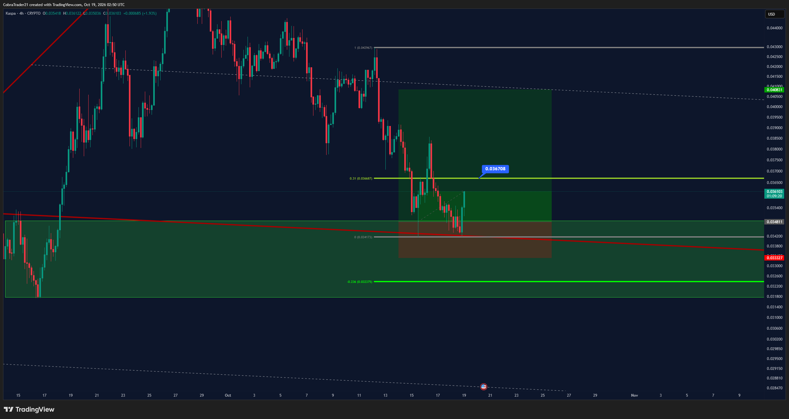
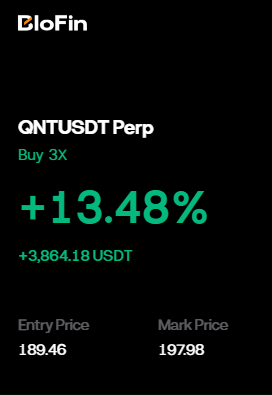

Trades VIP do Cobra. A cor da bolinha no nome do canal mostra o estado do trade.
Sem post novo desde 18/10 10:41. Entrada 11,310 / SL 10,78 / TP 12,125 / 14 / 16,7. LINK ~12,01 agora, entrada ~5,8% abaixo; mínima 24h 11,531, não acionou. LINK não está no watchlist do relatório diário, sem leitura do Market Cipher B: conferir 4h, 12h e 1D antes. Alerta COBRA LINK long 11,310 já existe.
Sem post novo. Níveis ≈ do gráfico: entrada ≈129,94, stop ≈112,41, alvo ≈255,48. AAVE ~148,5, entrada ~12,5% abaixo; mínima 24h 146,03. No fechamento de 18/10 a AAVE tinha 12h e 1D com divergência de baixa confirmada e 1W com ponto vermelho definitivo na sobrecompra: long contra o tempo gráfico maior. Alerta COBRA AAVE long ≈129,94 já existe.
Hoje às 08:52 o Cobra respondeu ao "QNT scalp here" de ontem: "Bela vela verde, como esperado. Scalp fácil no QNT", e às 08:56 explicou que entrou "só como scalp" e que os trades oficiais ficam na seção VIP trades. Às 10:44 postou o cartão de PnL da BloFin: QNTUSDT perpétuo, compra 3x, entrada 189,46, marca 197,98, +13,48% (+3.864 USDT), "scalp pequeno". Não diz se fechou tudo. QNT ~196,6 na Binance. Sem stop/alvo postados, sem alerta.
Canal 🟠btc-long, sem post novo desde 16/10. Entrada ≈79.128 (lida do gráfico), SL 77.537, TP 93.604. BTC ~82,18k, entrada ~3,7% abaixo; mínima 24h 80.684, não acionou. Long contra o 12h e o 1D (divergência de baixa confirmada).
Canal 🟠sol-long-2, sem post novo. ENTRY 99,77 / SL 95,67 / TP1 105,7 (reentrada depois do SOL long estopado). SOL ~104,5, entrada ~4,5% abaixo; mínima 24h 100,43, não acionou. Contra o 12h e o 1D. Alerta COBRA SOL long 2 99,77 já existe. Adaśko hoje: "a resistência do 0,31 na Solana segue valendo".
Ontem às 21:49 o Cobra repostou o gráfico de 4h e escreveu "Estamos vivos". Stop na entrada (2.317) pelo texto de 16/10; o gráfico ainda mostra a caixa original (entrada ≈2.316,61, stop ≈2.234,48). TP1 2.415 já batido. ETH ~2.406, ~3,8% acima do stop na entrada; mínima 24h 2.329. Long contra o 12h e o 1D.
Estopou no 0 a 0 em 18/10 (canal 🔴, sem post novo). O alerta antigo COBRA SOL long 101,37 perdeu o sentido.
Ontem à noite: 23:33 "Segurando", 23:49 "Eu avisei" e 23:50 "Querendo realizar lucro aqui" (gráfico 4h com KAS ≈0,0361, entrada ≈0,034811, stop ≈0,033327, alvo ≈0,040831). Às 23:51 abriu um sorteio de 50 USDT para quem postasse cartão de PnL; vencedor anunciado hoje às 10:45. O canal segue 🟢, então a posição continua aberta (não disse quanto realizou). Gate.io ≈0,0357; mínima 24h 0,0342, acima do stop.
Encerrado 14/10 (saiu na mão). O alerta antigo COBRA BTC long 82.085 perdeu o sentido.
Sem mudança desde 04/10. A favor do 12h e do 1D, mas longe (~7,6% acima; BTC ~82,18k).
Sem mudança desde 21/09. A favor do 12h e do 1D, longe (~18% acima).
Ordem antiga (13/08), sem atualização.
Sem atualização desde 17/09. Continua 🟢.
Sem canal APT em VIP-trades e sem menção nova. APT ≈0,769 na Binance.
Sem mudança desde 05/09, ainda 🟠 (categoria "Ethereum"). Preço ~0,707, muito abaixo da entrada.
Sem mudança desde 25/09, ainda 🟠. SOL ~104,5, entrada ~27% acima.
BTC perpétuo na Bybit. Valores com ≈ foram lidos das etiquetas do gráfico (ele não escreve os números). Hoje às 10:02 ele fez a live "Monday Update" e às 10:47 postou o gráfico completo.
NOVO. "Short 1 de hoje. CDW no golden pocket + zona do VAH. Divergências de baixa no 1h, 24m e 12m." Níveis ≈ lidos das etiquetas do gráfico (caixa de posição): entrada ≈84.218 (logo abaixo do 0,618 84.323 / 0,65 84.565), stop ≈85.695, alvo ≈77.414 (perto do 0,786 77.536). BTC ~82,18k, entrada ~2,5% acima. A favor do 12h e do 1D (divergência de baixa confirmada), mas no fechamento de ontem o 4h tinha Altas ✓ de pé, que bloqueiam short pela regra; é a mesma região do short do relatório diário (84.000–84.350).
NOVO. "Long local: eu quero divergências de alta no 12m, 6m e 3m. Há 2 zonas dentro da zona maior para entradas com melhor risco/retorno." Níveis ≈ do gráfico de 12 minutos: zona 1 ≈81.420–81.600 (0,618 81.497 / 0,65 81.416), zona 2 ≈81.000–81.100 (0,786 81.077), stop ≈80.625 (fundo da caixa), alvo ≈84.356. BTC ~82,18k, zona 1 ~0,7% abaixo. Entrada só com divergência de alta nos tempos bem curtos. Long contra o 12h e o 1D.
NOVO. "Esse long é bem menos provável porque já fizemos front-run no 0,618 na quinta; normalmente, quando volta ao 0,618, cai direto. Mas ainda é uma entrada válida. É um setup de CDW, então precisa estar lá na hora para calcular stop e tamanho." Níveis ≈ das etiquetas: entrada ≈79.656 (0,618 79.641), stop ≈78.937, alvo ≈86.718. Ele mesmo diz que o stop real é calculado na hora. BTC ~82,18k, entrada ~3,1% abaixo. Contra o 12h e o 1D.
NOVO. "Long 1" + gráfico 4h ("divergência de alta 4h 1h 24m 12m" no desenho). Níveis ≈ das etiquetas da caixa: entrada ≈77.743 (nwPOC, perto do 0,786 77.536), stop ≈75.185, alvo ≈86.821. BTC ~82,18k, entrada ~5,4% abaixo. Contra o 12h e o 1D.
NÍVEIS ALTERADOS. "Ainda estou muito interessado nesse short da semana passada!" Gráfico 4h "short swing em potencial; confirmações: divergência de baixa D + 4h + 1h + 24m + 12m". Níveis ≈ da caixa: entrada ≈85.568, stop ≈87.346, alvo ≈69.262 (0,618 69.667 / 0,66 68.357 logo abaixo). Em 12/10 a faixa era 84.950–85.840 com stop ≈89.300–90.000 e alvos 69.667 / 68.357 / 64.426. BTC ~82,18k, entrada ~4,1% acima. A favor do 12h e do 1D; bloqueado pelo 4h no fechamento de ontem.
Os posts de hoje não falam desse long (entrada 80.250,1, stop ≈77.500, alvo ≈88.000, de 15/10). Não dá para saber se segue aberto. BTC ~82,18k, ~2,4% acima da entrada.
Substituído pelos setups de short de hoje (short 1 ≈84.218 e short swing ≈85.568).
Plano antigo; sem novo post.
Plano antigo; ontem o BTC foi a 80.684, abaixo do stop ≈81.200, então perdeu o sentido. O alerta JAYSON BTC long 2ª zona ≈81.600 perdeu o sentido (hoje há o long local na mesma região, com stop ≈80.625).
Zona onde ele entrou (80.250).
Front-runado; sem mudança.
Sem mudança. A favor do 12h e do 1D. Longe.
Histórico; encerrado em 12/10.

Jayson, 19/10 10:42: Short 1 (1h) — entrada ≈84.218, stop ≈85.695, alvo ≈77.414 (lidos do gráfico).

Jayson, 19/10 10:43: short swing (4h) — entrada ≈85.568, stop ≈87.346, alvo ≈69.262.

Jayson, 19/10 10:37: long local (12m) — zonas 1 e 2 em ≈81.000–81.600, stop ≈80.625, alvo ≈84.356.

Jayson, 19/10 10:28: long no 0,618 com CDW (4h) — entrada ≈79.656, stop ≈78.937, alvo ≈86.718.

Jayson, 19/10 10:25: Long 1 (4h) — entrada ≈77.743, stop ≈75.185, alvo ≈86.821.

Cobra, 18/10 23:50: KAS "querendo realizar aqui" (4h) — entrada ≈0,034811, stop ≈0,033327, alvo ≈0,040831.

Cobra, 19/10 10:44: cartão de PnL do scalp de QNT (entrada 189,46, +13,48% a 3x).